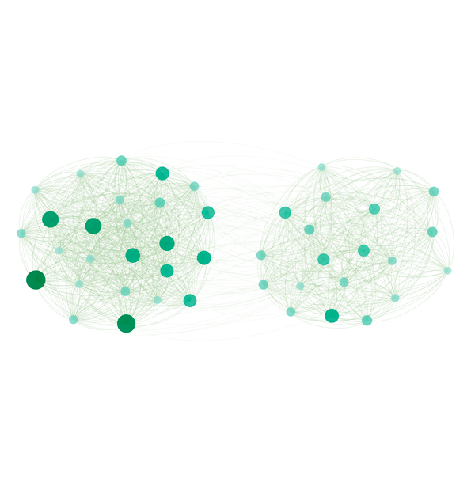
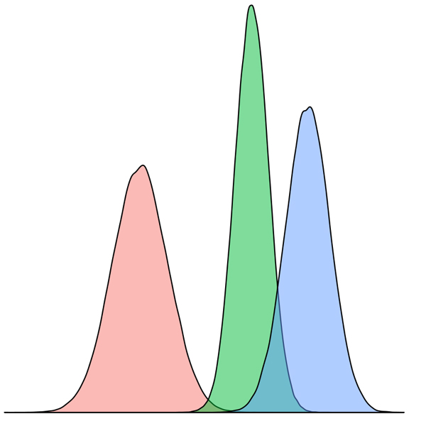
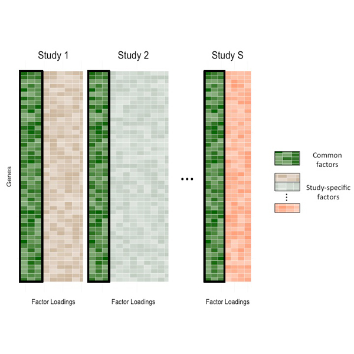

About Me
Hi! Welcome to my webpage. I am Zhuodiao (Jordy) Kuang, a Ph.D. student in Biostatistics at the University of Pittsburgh School of Public Health, and a Visiting Student at the Carnegie Mellon University School of Computer Science. Previously, I earned my M.S. in Biostatistics from Columbia University Mailman School of Public Health, and my B.S. in Statistics from Renmin University of China.


Research
The focus of my research is to develop statistical and deep-learning methods for the analysis of big and high-throughput biomedical data, such as electronic health records, wearable sensor signals, and genomic data. I am particularly interested in transfer learning and data integration, conformal prediction, and survival analysis, with applications to risk prediction, individualized treatment, and cognitive aging.
My research interests are:

Survival Analysis

Transfer Learning

Deep Learning

Conformal Prediction
Currently I am working on the following applications:
•Conformal inference of individualized treatment rules under distributional shift
•Transfer learning with multi-source summary-level data for enhanced risk prediction
•Deep learning for survival analysis and wearable-sensor signals
•24-hour rest–activity rhythms and cognition in older adults
Publications & Conferences
Manuscripts
(+ denotes equal contribution)
- Sui Z+, Kuang Z+, Tang L, Ding Y (2026+). Conformal Inference of Individualized Treatment Rules under Distributional Shift. Biostatistics. Under review.
- Bo N+, Zeng L+, Kuang Z, Ding Y (2026+). Deep Learning in Survival Analysis: A Tutorial with Applications to Prediction and Causal Inference. Lifetime Data Analysis. Under review.
- Abbas M, Nasar Z, Kuang Z, Lu H, Rosenthal D, Butts H (2025). Addressing Food Insecurity Through Community Empowerment in a Staten Island (Richmond County) Neighborhood in New York City, Pt. 2. Journal of Community Health. Minor revisions.
- Kuang Z, Huang Q, Daoyuan L, Gu T (2024). Fast Transfer Learning Method to Leverage Multi-Source Summary-Level Data for Enhanced Risk Prediction. Manuscript in preparation.
- Kuang Z (2022). Transfer Learning in Brain Tumor Detection: From AlexNet to Hyb-DCNN-ResNet. SDPIT 2022 (CPCI & CNKI), ISSN 2791-0210.
Conference Presentations
- Presenting & First Author — Leveraging Multi-Source Summary-Level Data for Enhanced Risk Prediction Through Synthetic Data. 15th International Conference on Health Policy Statistics (ICHPS), San Diego, CA, 2025.
Technical Skills
Programming & Scripting
- R*
- Python*
- C / C++
- MATLAB
- PHP
Statistical Software
- SAS*
- Stata
- SPSS
- Excel
Data & Tools
- MySQL
- MongoDB
- Git
- LaTeX
Languages
- English
- Mandarin
- Tujia
- Spanish
* Denotes preferred language for given skills.
Selected Coursework & Awards
Biostatistics, Ph.D. & Visiting Study (Pitt / CMU)
- Deep Learning (Carnegie Mellon University)
- Advanced Topics in Survival Analysis
- Statistical Learning & Data Integration
Biostatistics, Master of Science (Columbia)
- Survival Analysis
- Biostatistical Methods (I & II)
- Principles of Epidemiology
- Statistical Inference
- Advanced Statistical Computing
- Statistical Computing with SAS
- Probability
- Data Science
Statistics, Bachelor of Science (Renmin)
- Advanced Algebra
- Mathematical Analysis
- Probability Theory
- Real Analysis
- Sampling Techniques
- Stochastic Processes
- Regression Analysis
- Statistical Computing
- Applied Time Series Analysis
- Experimental Design
- Nonparametric Statistics
- Optimization
Big Data & Data Science, Minor (Renmin)
- Introductory Programming
- Database Systems
- Machine Learning
- Foundation of Data Science
- Computer Algorithm and Programming Design
- Application of Statistical Software
- Data Science Practice
Honors & Awards
- Chair’s Award, Columbia University Mailman School of Public Health (top 1%), 2025
- Columbia University SCALE Travel Fund Award (<5%), 2024
- Outstanding Undergraduate Scholarship (top 10%), 2023
- Baosteel Grand Prize Candidate (<5%), 2022
- National Honorable Mention, Mathematical Contest in Modeling (<2%), 2021
- Outstanding Student Scholarship (top 20%), 2021
- Undergraduate Entrepreneurship Scholarship (Smart Data Co-founder), 2020